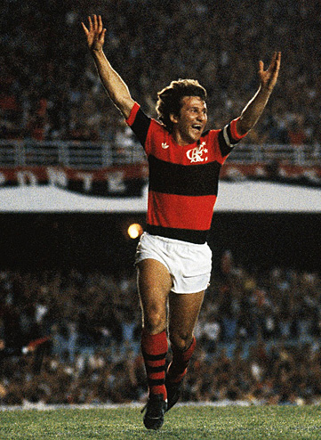
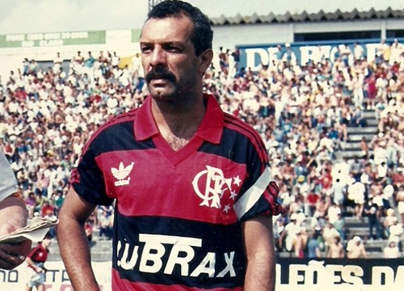
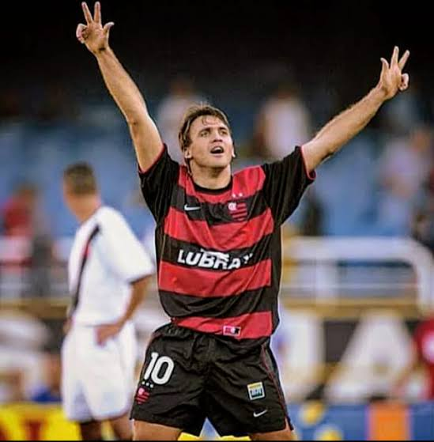
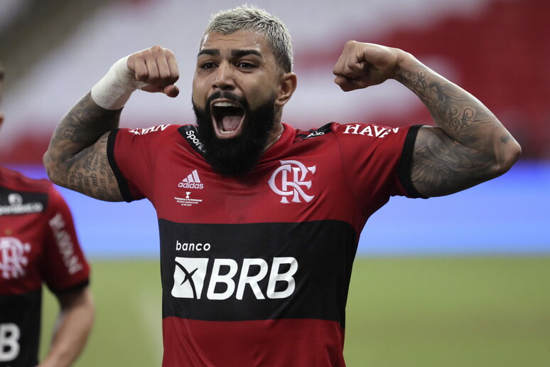
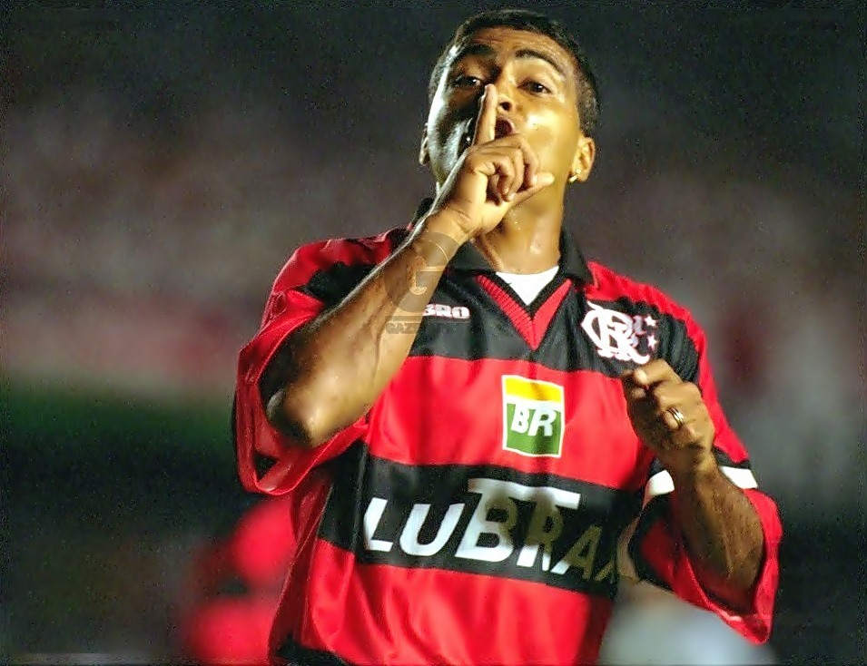

Zico é considerado um dos maiores jogadores de futebol brasileiro de todos os tempos, conhecido por sua habilidade excepcional, visão de jogo e precisão em cobranças de falta, tendo se destacado principalmente no Flamengo e na seleção brasileira durante as décadas de 1970 e 1980.

Júnior, conhecido como ícone do Flamengo da velha guarda, foi um ex-jogador de futebol que jogou ao lado de Zico, destacando-se como um habilidoso lateral-esquerdo e meia, contribuindo para a era de grandes conquistas do clube nos anos 1980.

Petkovic é um ex-jogador de futebol sérvio-brasileiro, conhecido por sua habilidade como meia e sua visão de jogo, que se destacou principalmente no Flamengo, onde se tornou ídolo da torcida e é lembrado por seus gols decisivos e assistências importantes, especialmente na conquista do Campeonato Brasileiro de 2009.

Adriano, conhecido como "Imperador", é um ex-jogador de futebol brasileiro, famoso por sua força física, habilidade técnica e faro de gol, que se destacou no Flamengo e em clubes europeus como o Inter de Milão, sendo considerado um dos atacantes mais talentosos de sua geração.

Gabigol, cujo nome verdadeiro é Gabriel Barbosa, é um atacante brasileiro conhecido por sua agilidade e habilidade em finalizações, que se destacou no Flamengo, onde se tornou ídolo da torcida ao marcar gols decisivos em finais importantes, incluindo a Copa Libertadores.

Voltar
Bônus para o Professor